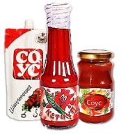

Компания ООО «Донконсервпром» была образована в 2001 году и является высокопрофессиональным производителем натуральных продуктов.
Самое ценное для нас - благополучие и свобода выбора наших покупателей. Именно потому, для производства наших продуктов мы используем только натуральное сырье, обеспечивая полезность выпускаемого продукта. Мы непрерывно совершенствуем технологии производства, добиваясь неизменно высокого качества.